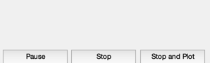
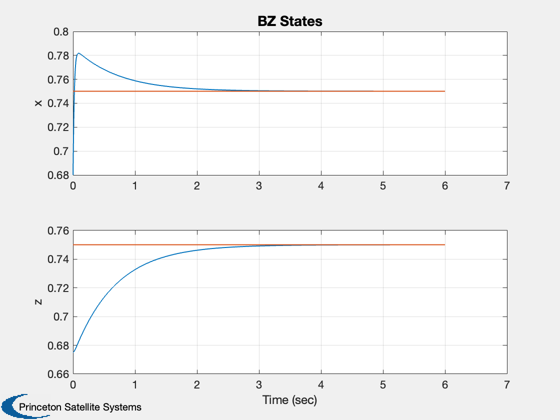
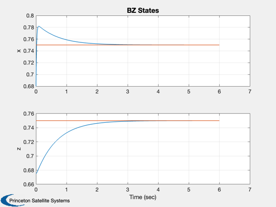

Chaotic Behavior Reactor Simulation
Simulates a chemical reactor that can undergo chaotic behavior.
------------------------------------------------------------------------- Reference: Scott, S.K. (1994.) Oscillations, Waves and Chaos in Chemical Reactions. pp. 27-39. ------------------------------------------------------------------------- See also: RHSBZ, TimeGUI, Plot2D -------------------------------------------------------------------------
Contents
%-------------------------------------------------------------------------- % Copyright (c) 2013 Princeton Satellite Systems, Inc. % All rights reserved. %-------------------------------------------------------------------------- % Since version 1. %--------------------------------------------------------------------------
Global for the time GUI
Creates a global variable for the time GUI, which displays the time remaining and estimated completion of a simulation. It computes the time left to go in the simulation, the predicted finish time and the ratio of simulation time to real time. -------------------------------------------------------------------------
global simulationAction simulationAction = ' ';
Model parameters
-----------------
d.eps = 1e-2; % kC*B/k5*A d.q = 9e-5; % 2*k3*k4/k2*k5 d.f = 0.25; % Stoichiometric factor
The steady-state state
-----------------------
xSS = [1;1]*0.5*(1-(d.f+d.q) + sqrt((d.f+d.q-1)^2+4*d.q*(1+d.f))); x = 0.9*xSS;
The control sampling period and the simulation integration time step
---------------------------------------------------------------------
dT = 0.001;
Number of sim steps
--------------------
nSim = 6000; tEnd = nSim*dT;
Plotting arrays
----------------
tPlot = zeros(1,nSim); xPlot = zeros(2,nSim);
Time statistics function
-------------------------
tToGoMem = [];
Initialize the time display
----------------------------
tToGoMem.lastJD = 0; tToGoMem.lastStepsDone = 0; tToGoMem.kAve = 0; [ ratioRealTime, tToGoMem ] = TimeGUI( nSim, 0, tToGoMem, 0, dT, ... 'BZ Reactor Simulation' ); xODEOptions = odeset( 'AbsTol', 1e-8, 'RelTol', 1e-8 ) ;
Run the simulation
See RHSBZ.m which gives a model of a Belousov-Zhabotinskii reactor. -------------------------------------------------------------------
t = 0; for k = 1:nSim % Display the status message %--------------------------- [ ratioRealTime, tToGoMem ] = TimeGUI( nSim,k,tToGoMem,ratioRealTime,dT); [z, x] = ode113( 'RHSBZ', [t t + dT], x, xODEOptions, d ); x = x(end,:)'; t = t + dT; tPlot(k) = t; xPlot(:,k) = x; % Time control %------------- switch simulationAction case 'pause' pause simulationAction = ' '; case 'stop' return; case 'plot' break; end end TimeGUI( 'close' )
Plot results
-------------
j = 1:k; xPlot = xPlot(:,j); [t, tL] = TimeLabl( tPlot(j) ); % Plot the steady state on each plot %----------------------------------- xSS = DupVect(xSS,k); Plot2D( xPlot(1,:), xPlot(2,:), 'x', 'z','BZ States') Plot2D( t, [xPlot;xSS],tL,{'x' 'z'},'BZ States','lin',['[1 3]';'[2 4]']) %-------------------------------------- % $Id: 3f53eca8de4e562370970ac53d7913b338285342 $
 
